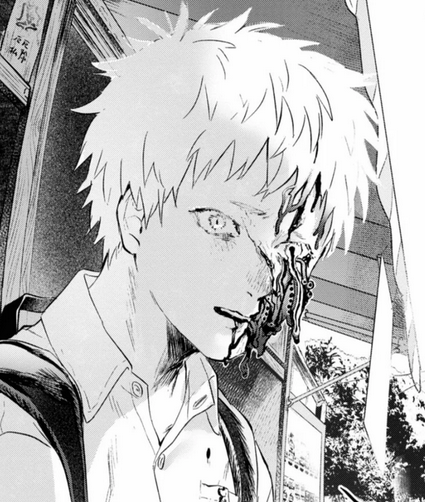

SCP-8539
Item #: SCP-8539
Object Class: Keter
Special Containment Procedures: SCP-8539 is to be kept at Site-██ with a tracking device attached at all times. Subject's living quarters are to be heavily warded with █████ paper talismans and Class-5 warding barriers erected by AA-104 staff, and regularly replaced when needed. Due to SCP-8539's extraplanar nature, subject is essentially uncontainable in the long term.
SCP-8539 is to remain under 24-hour surveillance. Any signs of agitation or deterioration of talismans are to be reported to Site Security immediately. In the case of containment breach, all personnel are to remain no less than 20m away from SCP-8539, and an instance of SCP-███ ("Hunting Dog") should be deployed as soon as possible.
Any requests made by SCP-8539 may be granted upon approval by ██ personnel. Any and all visits to SCP-8539 must be approved by Site Director and Dr. Satou, and only Level 3 personnel are permitted access. Visits are to be for the purpose of negotiating cooperation with SCP-8539. Negotiation is still ongoing.
Both SCP-8539-2 and SCP-8539-3 (presumably in the former's possession) must be detained as soon as possible. Due to the unique dense anomalous nature of SCP-████-1 ("Kubitachi"), Mobile Task Force AA-104 have been dispatched to retrieve SCP-8539-2. Following containment of targets, Class B amnestics are to be administered to any direct witnesses, and Class C amnestics to any friends and relatives of subjects.
Description: As of █/██/████, SCP-8539 is currently inhabiting the body of a 16-year-old Japanese teenager, formerly known as Indou Hikaru. Subject is 165 cm (5'5") tall, with white hair and grey eyes. In a calm state, SCP-8539 possesses no external abnormalities, appearing as a normal human being.
In an agitated state, SCP-8539's insides of an unknown extra-planar composition will "spill" from subject's body from various slits. These insides, presumed to be SCP-8539's previous appearance, are a swirling, intestine-like mass of unknown size. This mass is incredibly flexible and can change shape at will to an unknown degree, making physical containment incredibly difficult, in addition to being impervious to most physical attacks such as gunfire. Physician examination of SCP-8539 reveals no evidence of these insides, instead revealing ordinary human organs. Texture of these insides has been reported to be similar to cold, marinated chicken.
SCP-8539 demonstrates limited understanding of human culture and instincts, including but not limited to lust, romantic attraction, and fear of death. Despite this, SCP-8539 expresses a strong desire to live as a human being, often partaking in activities such as eating despite not requiring sustenance to survive. Further reports suggest SCP-8539 had been posing as Indou Hikaru since his death.
Prior to containment, SCP-8539 formed an extradimensional link to the former best friend of Indou Hikaru, a 17-year-old teenager named Tsujinaka Yoshiki, who will henceforth be referred to as SCP-8539-2. SCP-8539-2 appears to be aware of SCP-8539's identity as an anomaly; how he feels about his best friend's death and replacement is unknown, due to the former's continued evasion of Mobile Task Force AA-104 personnel. Despite this, SCP-8539 expresses a close emotional attachment to SCP-8539-2, and their separation appears to be the largest source of the subject's agitation.
X-Ray examination of SCP-8539 reveals the absence of the xiphoid process from the subject's sternum, henceforth referred to as SCP-8539-3. Further examination reveals roughly ██% of SCP-8539's essence originates from the chest cavity, making the retrieval of SCP-8539-3 a high priority. Lack of trauma in surrounding chest region indicates extraction of SCP-8539-3 was voluntary and likely self-inflicted.
Addendum SCP-8539-A: SCP-8539 demonstrates a strong instinct to break and devour souls; both of the human variety and that of other SCP subjects. During breach occurrence █, several D-class personnel and █-class researchers were found dead either via self-inflicted [REDACTED] or complete unknown means. Surveillance footage shows SCP-8539 "consuming" various personnel by enveloping them in the subject's insides and [REDACTED]. In addition, an instance of SCP-███ that was sent to hunt SCP-8539 was "consumed" in a similar manner and heavily damaged, while also damaging SCP-8539 in turn. The SCP-███ instance was later declared neutralized.
Addendum SCP-8539-B: " Reminder to staff that SCP-8539 is not to be met with threats or violence of any kind. To capture an illegitimate has been a lifelong goal of the Foundation- our aim is to persuade it to be contained voluntarily, for the betterment of humanity. It could enable us to successfully deal with phenomena like SCP-████-1. Do you think the Keter classification is a joke? After all, if it really wanted to leave, it would."
-Dr. Satou